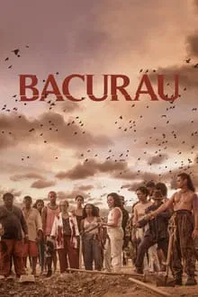
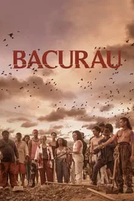

Cidade de Deus (2002), dirigido por Fernando Meirelles e codirigido por Kátia Lund, é um dos filmes brasileiros mais aclamados pela crítica internacional e nacional. Baseado no livro homônimo de Paulo Lins, o filme retrata a vida de jovens e adultos nas favelas do Rio de Janeiro, com foco na trajetória de dois personagens: Buscapé (Alexandre Rodrigues), um garoto sonhador que deseja se afastar da violência, e Zé Pequeno (Leandro Firmino), um jovem criminoso que busca dominar o tráfico de drogas na favela.
Dirigido por Karim Aïnouz, A Vida Invisível é um drama brasileiro que mergulha nas profundezas da vida de duas irmãs, Eurídice (Carol Duarte) e Guida (Julia Stockler), cujas vidas são radicalmente transformadas por uma sociedade patriarcal opressiva. O filme, baseado no livro homônimo de Martha Batalha, é uma história emocionante sobre a luta pela liberdade, amor e identidade, abordando temas como a repressão social, a busca pela autonomia feminina e os efeitos da invisibilidade das mulheres dentro da sociedade.
 

Dirigido por Kleber Mendonça Filho e Juliano Dornelles, Bacurau é um dos filmes mais inovadores e impactantes do cinema brasileiro contemporâneo. Misturando gêneros como western, terror, ficção científica e drama social, o filme traz uma visão crítica e politicamente relacionada à sociedade brasileira, abordando temas como resistência, identidade e abuso de poder. O longa foi amplamente aclamado pela crítica e premiado no Festival de Cannes com o Prêmio do Júri, consolidando-se como uma obra essencial para quem busca compreender a atual situação política e social do Brasil.
Dirigido por Marcos Jorge, Estômago é uma obra singular do cinema brasileiro, que mistura elementos de drama, comédia e uma reflexão crítica sobre classe social, poder e sobrevivência. Com um roteiro intrigante e uma cinematografia que explora as nuances de sua ambientação, o filme é uma análise satírica e visceral do comportamento humano, usando a culinária como metáfora para os instintos mais primitivos e as relações de poder.

Dirigido por Kleber Mendonça Filho, O Som ao Redor é um filme que explora as tensões e desigualdades sociais em um bairro de classe média no Recife. A trama se desenrola com a chegada de uma empresa de segurança privada, revelando os medos e inseguranças dos moradores. Utilizando o som como elemento central, o filme faz uma crítica à sociedade brasileira, abordando a crescente vigilância e os conflitos internos que surgem a partir dela.